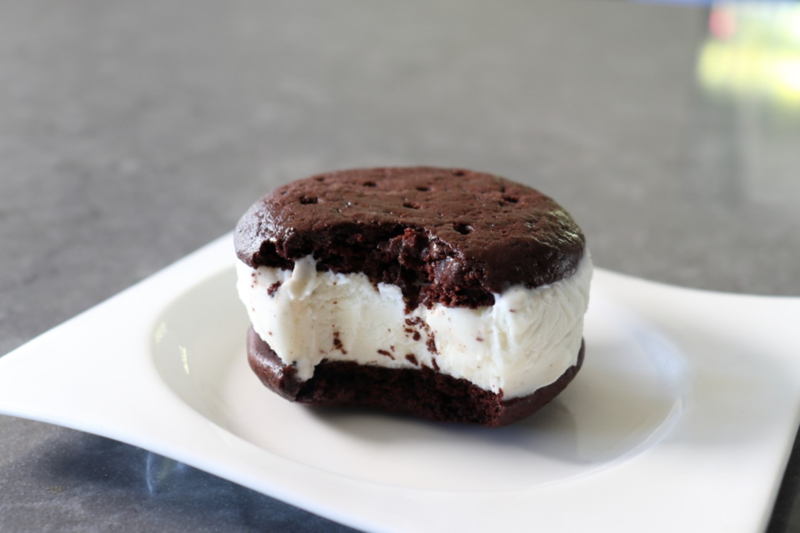

Chocolate Ice Cream Sandwich

Description
This very simple ice cream sandwich is exactly like the ones you remember from childhood.
It tastes just like the ones purchased from the ice cream truck with a soft, sticky, chewy cookie around soft, plain vanilla ice cream.
Ingredients
- vegetable oil cooking spray
- 1/2 cup all-purpose flour
- 1 tablespoon all-purpose flour
- 1/4 teaspoon kosher salt
- 1/4 teaspoon baking soda
- 1/3 cup sifted Dutch-process cocoa powder
- 3 tablespoons unsalted butter, softened
- 1/4 cup white sugar
- 2 tablespoons light brown sugar
- 1/2 teaspoon pure vanilla extract
- 1/3 cup whole milk, at room temperature
- 6 scoops vanilla ice cream
Steps
- Preheat the oven to 350 degrees F (175 degrees C). Line a baking sheet with a silicone liner (such as Silpat).
Spray liner with cooking spray and rub it in to be sure it's completely covered.
- Whisk 1/2 cup plus 1 tablespoon flour, salt, baking soda, and cocoa together in a bowl until thoroughly combined.
Sift mixture if it seems at all clumpy or chunky.
- Mix butter, both sugars, and vanilla in another bowl with a spatula until you have a smooth paste. Add flour mixture along with milk and stir until batter is smooth and stiff.
Clean off the spatula with a cookie scoop and drop 12 scoops batter onto the prepared baking sheet.
- Bake in the center of the preheated oven until the tops of the cookies no longer look wet and shiny, 9 to 10 minutes. Remove from the oven and tap and shake the pan on the counter
5 times to settle and compress the cookies. Let cookies cool to room temperature on the pan, about 15 minutes.
- Transfer baking sheet into the freezer until cookies are firm, about 15 minutes.
- Remove from the freezer and remove cookies from the pan by lifting the silicone liner carefully under each one. Poke 10 or 12 holes in the surface of each cookie with
the sharp edge of a chopstick. Return to the freezer until ready to assemble.
- When ready to assemble, remove from the freezer. Turn one cookie upside down, place 1 scoop ice cream on top, and sandwich with a second cookie.
Serve immediately or wrap in plastic wrap and freeze for 3 hours before serving. Repeat to make remaining ice cream sandwiches.